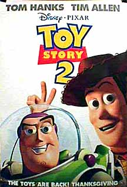

Contents | Features | Reviews | Books | Archives | Store |
 |
|
| Movie Credits | Buy It! |
Toy Story 2
Review by
Carrie Gorringe
Posted 23 November 1999
|  |
Directed by John Lasseter Co-directed by Lee Unkrich and Ash Brannon Starring the Voices of Tom
Hanks, Screenplay by Andrew
Stanton, |
Within the still-emerging genre of computer animation, Toy Story 2 is and will be considered a visual milestone.What Lasseter and his merry band of cyberanimators have to offer the public after nearly fifteen years of programming and passionate commitment are design advances that are, quite literally, breathtaking, even for those who have only the most vague concept concerning how difficult the medium is to master (as a point of reference, each of Pixar’s computer animators can complete four to five seconds of footage per week, so the process of getting code and microchips to produce cinematic magic may produce better results, but not without any less effort).Much of the “flatness” so characteristic of early computer animation has nearly been eliminated;the backgrounds and characters appear more organically related, rather than one looking like the other’s afterthought.Even in comparison to the first Toy Story, the progress has been exponential.Marry visual excellence with three-dimensional characters (psychologically speaking), impeccable voice-over work from seasoned veterans, and a wit-laden script which takes full advantage of all of these elements, and this Pixar-Disney collaboration will become part of most children’s “must-see” list. Unlike with Pokemon, coercing parents into attending won’t be necessary: it wouldn’t be surprising if the parents were victorious in the race to the car.
In the first episode (a.k.a. Toy Story One), you’ll recall that it was Woody’s (Hanks) responsibility to undo the effects of his own jealousy and rescue Buzz Lightyear (Allen) from the budding sociopath-next-door named Sid; this time, it’s Buzz’ turn to repay the favor, when an unethical toy-shop owner named Big Al takes advantage of a situation to add Woody to his collection of vintage toys (Al himself seems to never have left his childhood; his apartment, filled nearly to the breaking point with the totems of 1950s décor, would send most of today’s nouveau-retro design aficionados in search of a sturdy pick-lock). The audience comes to understand the source of Al’s obsession, less a matter of sentiment than of economics. Woody, you see, was not a mere action figure, but the foundation of an entire toy conglomerate, all of it based upon a TV show called Woody’s Roundup. Woody’s world consisted of his horse, the ever-faithful Bullseye, his tomboy friend, Jessie (Cusack) and Stinky Pete, the Prospector (Grammer), all of whom participated in exciting adventures in the wild west, before being killed off by something more dangerous than the latest villain in a black hat (“I’ve got two words for you,” hissed Stinky Pete in response to Woody’s query about their collective fate, “Sput-nik.”). Once the space craze set in, Woody and the gang were consigned to the world of flickering kinescopes and the loyalties of an ever-narrowing band of fans (the computer program that created the dazzling recreations of Woody’s in black and white went through two years of modifications before any animation work could begin).
Now, with the addition of Woody to Al’s collection, Jessie and Stinky Pete can come out of their generation-long storage purgatory and go off to a toy museum in Tokyo -- unless Woody decides to escape. They attempt to persuade him to stay, first by tears and threats, then by an appeal to his deepest fear: that Andy, Woody’s owner, will eventually tire of him anyway, so he should just resign himself to the inevitable, and be a star in a museum rather than yet another has-been toy destined for the junk yard. While Woody alternates between guilt and feelings of self-preservation, Buzz has assembled a group of Andy’s toys, including Mr. Potato Head (Rickles), Rex, the neurotic dinosaur (Shawn), Slinky Dog (Varney) and Hamm, the piggy bank (Ratzenberger), for a search-and-rescue mission, which takes them into new urban territory and new opportunities to confront a world that exists outside the walls of a boy’s room -- one that is really not friendly to high-impact plastic in various ways and to varying degrees.
One of the strengths exhibited by Toy Story 2’s creative crew is the means by which they integrate this integral (and universal) theme of fearing abandonment into the story without allowing the emotions to venture too far south for too long a period of time. It’s touching, but not maudlin. The sequence involving Jessie’s all-too-brief memories of being a beloved toy (with a tender musical accompaniment by Sarah McLaughlin) starts out as just another sad reminiscence of yet another abandoned toy, then, by degrees, it becomes less a story about Jessie and more about everyone in the audience. But the filmmakers, by some sort of creative ESP, know exactly when to gently transition the audience back to “reality,” as it were, having provided a sufficient level of audience identification with Jessie and, thus, with Woody and his dilemma. It’s this subtle attention to detail that allows these filmmakers to stand apart from the preachy and clumsy efforts that often pass for emotional insight in animated films ( as a bonus, Pixar even went back to its archives and pulled out the 1985 short that started it all, the deliriously funny Luxo Jr., proving, indirectly, that the company’s talent was kept in restraint only by a lack of technology and money).
Of course, it also helps if said filmmakers and the voice-over cast are having fun amidst all the seriousness, and you can rest assured that they are. Joy in the work and respect for the characters ooze from every frame of this film. The humor in the script reflects the sensitive sensibilities of everyone involved, and no mania was harmed at any stage of the filmmaking. Two examples of dialogue, slight though they are, stand out. When Buzz encounters a “new and improved” Buzz Lightyear, who, like Buzz in Toy Story, actually believes his own press clippings, the former is heard to mutter to himself, in a moment of self-realization, the vain hope that he really was never “this delusional.” Woody’s response to his new companions and their plans for joining a Japanese toy museum might have been, “Are you nuts?” Instead, the line comes out as, “Are you shrinkwrapped?” As above, subtle attention to metaphoric details illustrate how the intersection between seriousness and fun is one of the most effective means of creating art. How else to explain the off-the-wall casting of Robert Goulet to sing the film’s trademark song, You’ve Got a Friend in Me? Take a still-great voice, with a “Q” factor that is slightly dated, and damned if the loopy idea doesn’t soar right through Andy’s bedroom ceiling in a fitting finale.
Does Toy Story 2 have any faults? Well, a few. There still is some ground to be broken in terms of rendering human figures; although the process of animating humans has progressed since the original film, computer animation, as in its traditional counterpart, has some more advances to make before it can accurately capture the idiosyncrasies of human physiology (we possess very few of those precise right angles so beloved of mathematical computations). There is also an extended riff on the Star Wars films that extends a little too far for comedic effect, but otherwise Toy Story 2 is both a worthy successor to and a vast improvement over the original.
Contents | Features | Reviews
| Books | Archives | Store
Copyright © 1999 by Nitrate Productions, Inc. All
Rights Reserved.